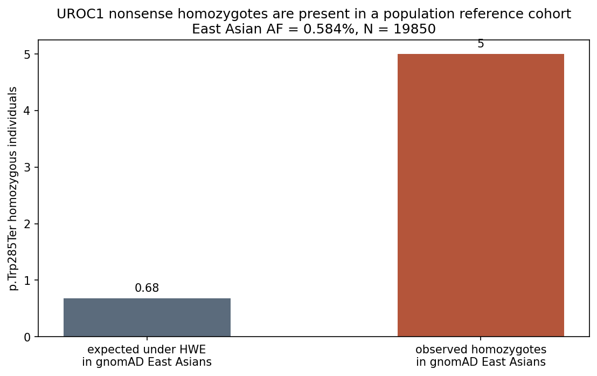
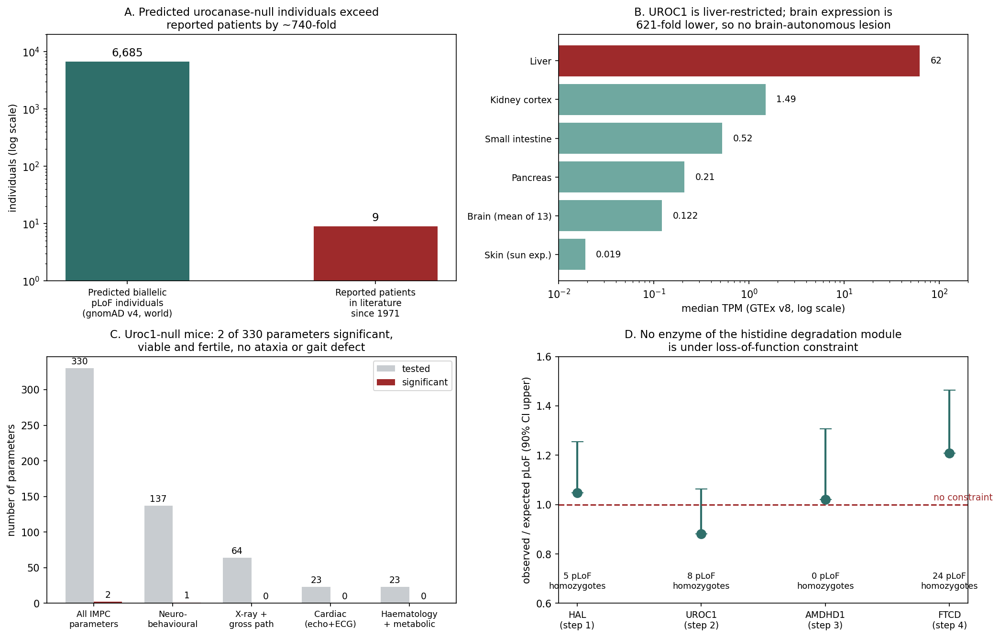

Urocanic Aciduria
Urocanic aciduria is an autosomal recessive block of the second step of histidine catabolism, caused by biallelic loss-of-function variants in UROC1, which encodes urocanate hydratase (urocanase, EC 4.2.1.49). Urocanase hydrates trans-urocanate to an imidazolone-propanoate intermediate in the cytosol of hepatocytes, and the enzyme is almost exclusively expressed in liver. When it is absent, urocanate produced by histidine ammonia-lyase upstream has no onward route, accumulates, and spills into urine and plasma. That biochemical phenotype is the obligate and well-established consequence of the enzyme block, and it is what the disease name describes. Whether the enzyme block produces a clinical phenotype is a separate and unsettled question, and this entry keeps the two apart. The disorder entered the literature in 1971 through a proband investigated for intellectual disability whose liver urocanase activity was deficient, and the first UROC1 variants were reported in 2009 in a girl with intellectual disability and intermittent ataxia. The OMIM synonym "encephalopathy due to urocanase deficiency" preserves that reading. It has since been undermined from the other direction: two compound-heterozygous siblings with the characteristic biochemical abnormality were reported as phenotypically normal, one of them with a general cognitive score in the 83rd percentile, and the authors concluded that urocanic aciduria may be an otherwise benign biochemical phenotype whose carriers with developmental delay should still be worked up for another cause. ClinGen's Aminoacidopathy expert panel, re-evaluating the pair in 2026, classifies UROC1 for urocanic aciduria as Limited and states directly that the relationship of the reported neurological phenotypes to the biochemical abnormality is unclear. The entry therefore records the metabolite phenotype as demonstrated, records the neurological features as reported in ascertained probands without asserting a causal edge to them, and carries the attribution question as a discussion.
Ask OpenScientist
Ask a research question about Urocanic Aciduria. OpenScientist will conduct autonomous deep research using the Disorder Mechanisms Knowledge Base and PubMed literature (typically 10-30 minutes).
Do not include personal health information in your question. Questions and results are cached in your browser's local storage.
Inheritance
1Show evidence (1 reference)
Discussions and Knowledge Gaps
2Show evidence (2 references)
Pathophysiology
4Show evidence (2 references)
Show evidence (2 references)
Show evidence (3 references)
Show evidence (1 reference)
Pathograph
Phenotypes
3Genitourinary 1
Show evidence (1 reference)
Nervous System 2
Show evidence (2 references)
Show evidence (1 reference)
Genetic Associations
1Medical Actions
1Show evidence (1 reference)
Diagnosis
2Show evidence (1 reference)
Show evidence (1 reference)
Source YAML
click to showname: Urocanic Aciduria
creation_date: "2026-11-20T14:20:00Z"
category: Mendelian
synonyms:
- urocanase deficiency
- urocanate hydratase deficiency
- UROC1 deficiency
- encephalopathy due to urocanase deficiency
- urocanic aciduria (disease)
description: >-
Urocanic aciduria is an autosomal recessive block of the second step of
histidine catabolism, caused by biallelic loss-of-function variants in UROC1,
which encodes urocanate hydratase (urocanase, EC 4.2.1.49). Urocanase hydrates
trans-urocanate to an imidazolone-propanoate intermediate in the cytosol of
hepatocytes, and the enzyme is almost exclusively expressed in liver. When it
is absent, urocanate produced by histidine ammonia-lyase upstream has no
onward route, accumulates, and spills into urine and plasma. That biochemical
phenotype is the obligate and well-established consequence of the enzyme
block, and it is what the disease name describes.
Whether the enzyme block produces a clinical phenotype is a separate and
unsettled question, and this entry keeps the two apart. The disorder entered
the literature in 1971 through a proband investigated for intellectual
disability whose liver urocanase activity was deficient, and the first UROC1
variants were reported in 2009 in a girl with intellectual disability and
intermittent ataxia. The OMIM synonym "encephalopathy due to urocanase
deficiency" preserves that reading. It has since been undermined from the
other direction: two compound-heterozygous siblings with the characteristic
biochemical abnormality were reported as phenotypically normal, one of them
with a general cognitive score in the 83rd percentile, and the authors
concluded that urocanic aciduria may be an otherwise benign biochemical
phenotype whose carriers with developmental delay should still be worked up
for another cause. ClinGen's Aminoacidopathy expert panel, re-evaluating the
pair in 2026, classifies UROC1 for urocanic aciduria as Limited and states
directly that the relationship of the reported neurological phenotypes to the
biochemical abnormality is unclear. The entry therefore records the metabolite
phenotype as demonstrated, records the neurological features as reported in
ascertained probands without asserting a causal edge to them, and carries the
attribution question as a discussion.
notes: >-
Scope. This entry is anchored on MONDO:0010167 / OMIM 276880, the UROC1
enzymopathy. The wider biology of urocanic acid - in particular its role as a
UV-absorbing chromophore in skin, where cis-urocanic acid formed by
photoisomerisation acts as an immunomodulator - is a large and separate
literature that has nothing to do with this disease, and is not drawn on here.
Searching the knowledge base for "urocanic" returns two ichthyosis entries for
exactly that cutaneous reason; neither concerns UROC1.
Why no causal edge reaches intellectual disability or ataxia. Writing one
would assert what the cited sources decline to assert. Four reported probands
carry UROC1 variants; one sibpair with the same biochemical phenotype is
phenotypically normal; the 1971 index patient had tuberculous meningitis at 19
months with residual hemiplegia and seizures, which PMID:30619714 names as a
confound; and ClinGen states the relationship is unclear. The phenotype rows
for intellectual disability and ataxia are therefore present, because they are
what the probands were reported with, but they are not wired to the mechanism
and each row says why.
No GeneReviews chapter. Checked offline against the committed Bookshelf index
(cache/bookshelf/genereviews.csv, snapshot 2026-09-10, 958 chapters) for
"urocan", "histidin" and "UROC1": no current or retired chapter matches, and
no gene-scoped UROC1 chapter exists. There is likewise no StatPearls article,
which would not be a baseline in any case. Phenotype content here therefore
comes from the primary reports rather than from a chapter.
Histidine is not elevated, and the block is isolated. An earlier draft of this
entry carried a "Secondary Histidine Elevation" node, inferred from the order
of the pathway: urocanate accumulates, so histidine should back up behind
histidine ammonia-lyase. PMID:30619714 measured it and it does not -
"Notably, histidine levels were found to be within normal limits in all
samples" - and the same paper reports normal plasma amino acids in its first
case and concludes the lesion is "a single, isolated defect without
significant inhibition or enrichment of alternate pathways". The node and its
edge were removed and the measurement is now curated as a positive finding on
the block itself. The inference came from the deep-research report's
mechanistic model, which is also where the wrong HP:0500152 label came from
(that identifier is Hypocystinemia, not Hyperhistidinaemia; confirmed against
OLS on 2026-11-20). HPO has no hyperhistidinaemia term in any case: searching
the HP label cache for "histidin" returns nothing.
Deep-research provenance. The OpenScientist report in
research/Urocanic_Aciduria-deep-research-openscientist.md assembled four
further lines of argument that the biochemical phenotype is not accompanied by
a clinical one: absence of loss-of-function constraint on UROC1 in gnomAD v4
with pLoF homozygotes present, a common East Asian nonsense allele observed in
the homozygous state, liver-restricted expression with near-absent brain
expression in GTEx v8, and a viable, fertile IMPC Uroc1 knockout without a
neurobehavioural phenotype. Those are database-derived findings rather than
claims from a citable publication, and they were not independently re-derived
in this curation session, so they are recorded here as deep-research output
and are deliberately not used as evidence items. They agree with, and were not
needed to reach, the position taken above.
disease_term:
preferred_term: urocanic aciduria
term:
id: MONDO:0010167
label: urocanic aciduria
parents:
- Inborn Error of Metabolism
- Disorder of Amino Acid Metabolism
references:
- reference: PMID:5124677
title: "Urocanic aciduria: a defect in the urocanase activity in the liver of a mentally retarded."
- reference: PMID:32439973
title: "Integrated analysis of metabolomic profiling and exome data supplements sequence variant interpretation, classification, and diagnosis."
- reference: PMID:27391121
title: Whole exome sequencing diagnosis of inborn errors of metabolism and other disorders in United Arab Emirates.
inheritance:
- name: Autosomal recessive
inheritance_term:
preferred_term: Autosomal recessive inheritance
term:
id: HP:0000007
label: Autosomal recessive inheritance
description: >-
Biallelic UROC1 loss of function is required. Reported probands are
homozygous or compound heterozygous, and carrier parents are biochemically
and clinically unremarkable. Penetrance of the biochemical phenotype appears
complete in biallelic individuals; penetrance of any clinical phenotype is
not established, and the existence of phenotypically normal biallelic
siblings shows it is not complete.
evidence:
- reference: CGGV:assertion_af2ff293-39ce-46b7-af58-01e3685f4334-2026-04-10T160000.000Z
reference_title: "UROC1 / urocanic aciduria (Limited)"
supports: SUPPORT
evidence_source: OTHER
snippet: "UROC1 | HGNC:26444 | urocanic aciduria | MONDO:0010167 | AR | Limited"
explanation: >-
The ClinGen Aminoacidopathy Gene Curation Expert Panel records autosomal
recessive inheritance for this gene-disease pair.
pathophysiology:
- name: Biallelic UROC1 Loss-of-Function Variants
biological_scale: MOLECULAR
node_class: PATHOGENIC_SEQUENCE_VARIANT
description: >-
Two UROC1 alleles that cannot produce a functional enzyme. Reported alleles
include missense changes that disrupt folding or abolish substrate binding
and a recurrent nonsense allele; ClinGen's curation counts four unique
missense variants and one nonsense variant across the reported human cases.
genetic_context:
variant_origin: GERMLINE
functional_impact_category: LOSS_OF_FUNCTION
genes:
- preferred_term: UROC1
term:
id: hgnc:26444
label: UROC1
molecular_functions:
- preferred_term: urocanate hydratase activity
modifier: LOSS_OF_FUNCTION
term:
id: GO:0016153
label: urocanate hydratase activity
evidence:
- reference: PMID:19304569
reference_title: Mutations in the urocanase gene UROC1 are associated with urocanic aciduria.
supports: SUPPORT
evidence_source: HUMAN_CLINICAL
snippet: >-
This report describes the first putative mutations, p.L70P and p.R450C, in
the coding region of the UROC1 gene in a girl with urocanic aciduria
presenting with mental retardation and intermittent ataxia.
explanation: >-
The first report of UROC1 coding variants in a proband with the
biochemical phenotype.
- reference: CGGV:assertion_af2ff293-39ce-46b7-af58-01e3685f4334-2026-04-10T160000.000Z
reference_title: "UROC1 / urocanic aciduria (Limited)"
supports: SUPPORT
evidence_source: OTHER
snippet: >-
Four unique missense variants and one nonsense varaint have been reported
in humans thus far.
explanation: >-
ClinGen's allele census for this gene-disease pair. The misspelling is the
source's own and is quoted as written.
downstream:
- target: Loss of Urocanate Hydratase Activity
causal_link_type: DIRECT
description: >-
Neither allele yields an enzyme capable of catalysis, so hepatocytes have
no urocanate hydratase activity.
evidence:
- reference: PMID:19304569
reference_title: Mutations in the urocanase gene UROC1 are associated with urocanic aciduria.
supports: SUPPORT
evidence_source: IN_VITRO
snippet: >-
Computed (in silico) predictions, protein expression studies and enzyme
activity assays suggest that none of the mutations can produce a fully
functional enzyme.
explanation: >-
Protein expression and enzyme activity assays establish that the
reported alleles do not yield a functional enzyme.
- name: Loss of Urocanate Hydratase Activity
biological_scale: MOLECULAR
node_class: CATALYTIC_ACTIVITY
description: >-
Absent or non-functional urocanase in the hepatocyte cytosol. The enzyme
normally hydrates trans-urocanate to an imidazolone-propanoate intermediate,
the second step of histidine degradation.
molecular_functions:
- preferred_term: urocanate hydratase activity
modifier: LOSS_OF_FUNCTION
term:
id: GO:0016153
label: urocanate hydratase activity
cellular_components:
- preferred_term: hepatocyte cytosol
term:
id: GO:0005829
label: cytosol
cell_types:
- preferred_term: hepatocyte
term:
id: CL:0000182
label: hepatocyte
notes: >-
The modifier is LOSS_OF_FUNCTION rather than DECREASED deliberately: the
reported alleles abolish catalysis rather than reduce a normally regulated
activity, which is the qualitative case CLAUDE.md reserves the value for.
evidence:
- reference: PMID:30619714
reference_title: Untargeted metabolomics identifies unique though benign biochemical changes in patients with pathogenic variants in UROC1.
supports: SUPPORT
evidence_source: HUMAN_CLINICAL
snippet: >-
Urocanic aciduria is caused by a deficiency in the enzyme urocanase (E.C.
4.2.1.49) encoded by the gene UROC1.
explanation: States the enzyme defect that defines the disorder.
- reference: PMID:30619714
reference_title: Untargeted metabolomics identifies unique though benign biochemical changes in patients with pathogenic variants in UROC1.
supports: SUPPORT
evidence_source: HUMAN_CLINICAL
quote_role: BACKGROUND
snippet: >-
The family of urocanases is highly conserved across multiple species and
appears to be almost exclusively expressed in the liver
explanation: >-
Establishes the hepatic restriction that makes the hepatocyte the site of
the block. Quoted from the paper's introduction, where it restates
established expression data rather than a result of this study.
downstream:
- target: Hepatic Block of Histidine Catabolism
causal_link_type: DIRECT
description: >-
With the second step absent, flux from histidine to glutamate cannot
proceed past urocanate.
evidence:
- reference: PMID:30619714
reference_title: Untargeted metabolomics identifies unique though benign biochemical changes in patients with pathogenic variants in UROC1.
supports: SUPPORT
evidence_source: HUMAN_CLINICAL
quote_role: BACKGROUND
snippet: >-
urocanic aciduria is caused by defects in urocanase, which catalyzes the
conversion of urocanic acid to imidazolonepropionic acid
explanation: >-
Names the blocked reaction, placing the lesion at the second step of the
pathway.
- name: Hepatic Block of Histidine Catabolism
biological_scale: CELLULAR
node_class: METABOLIC_FLUX_BLOCK
description: >-
The histidine degradation route is interrupted at its second step. Histidine
ammonia-lyase upstream continues to deaminate histidine to urocanate, so the
block is a substrate trap rather than a simple loss of product.
biological_processes:
- preferred_term: L-histidine catabolic process
modifier: DECREASED
term:
id: GO:0006548
label: L-histidine catabolic process
cell_types:
- preferred_term: hepatocyte
term:
id: CL:0000182
label: hepatocyte
evidence:
- reference: CGGV:assertion_af2ff293-39ce-46b7-af58-01e3685f4334-2026-04-10T160000.000Z
reference_title: "UROC1 / urocanic aciduria (Limited)"
supports: SUPPORT
evidence_source: OTHER
snippet: >-
The mechanism for disease is biallelic loss of function, with loss of
enzyme activity resulting in a buildup of the prior metabolite in the
histidine metabolic pathway, urocanic acid.
explanation: >-
ClinGen states the mechanism as a substrate buildup behind the enzyme
block.
- reference: PMID:30619714
reference_title: Untargeted metabolomics identifies unique though benign biochemical changes in patients with pathogenic variants in UROC1.
supports: SUPPORT
evidence_source: HUMAN_CLINICAL
snippet: >-
Notably, histidine levels were found to be within normal limits in all
samples.
explanation: >-
The block does not back up to histidine. Measured directly in both
biallelic siblings, in plasma and urine, which is why no causal edge runs
from this node to a histidine elevation.
- reference: PMID:30619714
reference_title: Untargeted metabolomics identifies unique though benign biochemical changes in patients with pathogenic variants in UROC1.
supports: SUPPORT
evidence_source: HUMAN_CLINICAL
snippet: >-
a single, isolated defect without significant inhibition or enrichment of
alternate pathways
explanation: >-
The authors' own characterisation of the lesion, which is what makes this
node the end of the metabolic branch rather than the start of a wider
derangement.
downstream:
- target: Urocanate Accumulation
causal_link_type: DIRECT
description: >-
Urocanate produced upstream has no onward route and accumulates.
evidence:
- reference: CGGV:assertion_af2ff293-39ce-46b7-af58-01e3685f4334-2026-04-10T160000.000Z
reference_title: "UROC1 / urocanic aciduria (Limited)"
supports: SUPPORT
evidence_source: OTHER
snippet: >-
loss of enzyme activity resulting in a buildup of the prior metabolite
in the histidine metabolic pathway, urocanic acid
explanation: Names urocanic acid as the metabolite that accumulates.
- name: Urocanate Accumulation
biological_scale: ORGANISM
node_class: METABOLITE_ACCUMULATION
description: >-
Urocanate accumulates in hepatocytes and is released into the circulation
and filtered into urine, producing the urocanic aciduria for which the
disorder is named. This is the demonstrated and obligate consequence of the
enzyme block.
chemical_entities:
- preferred_term: trans-urocanic acid
modifier: INCREASED
term:
id: CHEBI:17771
label: trans-urocanate
- preferred_term: cis-urocanic acid
modifier: INCREASED
term:
id: CHEBI:30819
label: cis-urocanate
notes: >-
The metabolomic signature reported in PMID:30619714 is three compounds -
"significantly elevated trans-urocanic acid, cis-urocanic acid and
imidazole propionate". The first two are bound. Imidazole propionate is
deliberately not bound: the paper gives no structure or identifier for it,
and the name maps to several distinct CHEBI entries (CHEBI:27384
3-(4-oxo-4,5-dihydro-1H-imidazol-5-yl)propanoic acid, which is the
urocanase product and so should fall rather than rise behind this block;
CHEBI:73087 dihydrourocanic acid; CHEBI:156055
3-(1H-imidazol-1-yl)propanoic acid). Binding one would assert an identity
the source does not give, so the compound is named in the quoted evidence
and left unbound.
evidence:
- reference: PMID:30619714
reference_title: Untargeted metabolomics identifies unique though benign biochemical changes in patients with pathogenic variants in UROC1.
supports: SUPPORT
evidence_source: HUMAN_CLINICAL
snippet: >-
Here, we describe two phenotypically normal siblings with compound
heterozygous pathogenic variants in UROC1 and characteristic biochemical
evidence of urocanase deficiency collected utilizing untargeted
metabolomic analysis.
explanation: >-
The biochemical phenotype is present in biallelic individuals, and is
present even when no clinical phenotype is.
downstream:
- target: Elevated urinary urocanic acid
causal_link_type: DIRECT
description: >-
Circulating urocanate is filtered and appears in urine, where it is
detected by organic-acid screening or untargeted metabolomics.
evidence:
- reference: CGGV:assertion_af2ff293-39ce-46b7-af58-01e3685f4334-2026-04-10T160000.000Z
reference_title: "UROC1 / urocanic aciduria (Limited)"
supports: SUPPORT
evidence_source: OTHER
snippet: >-
One family was asymptomatic except for the characteristic urocanic
aciduria
explanation: >-
Names the urinary finding as the characteristic, and in that family the
only, manifestation.
phenotypes:
- name: Elevated urinary urocanic acid
category: Biochemical
description: >-
Excretion of urocanic acid in urine, the defining and obligate laboratory
finding. Detected historically by urine paper chromatography on newborn
screening specimens and now by untargeted metabolomic analysis of urine and
plasma.
phenotype_term:
preferred_term: Elevated urinary urocanic acid
term:
id: HP:0033354
label: Abnormal urine metabolite level
notes: >-
Bound to the general concept because HPO has no urocanate-specific term.
Searching the HP label cache for "urine metabolite", "aminoaciduria" and
"organic aciduria" returns HP:0001992 Organic aciduria, HP:0003355
Aminoaciduria and relatives, none of which names urocanic acid; HP:0033354
Abnormal urine metabolite level is the nearest accurate parent. The
specificity is carried in preferred_term. The deep-research report offered
HP:0033354 under the label "Elevated plasma urocanate", which is not this
term's label and was not used.
evidence:
- reference: CGGV:assertion_af2ff293-39ce-46b7-af58-01e3685f4334-2026-04-10T160000.000Z
reference_title: "UROC1 / urocanic aciduria (Limited)"
supports: SUPPORT
evidence_source: OTHER
snippet: >-
One family was asymptomatic except for the characteristic urocanic
aciduria
explanation: >-
Establishes the urinary finding as the characteristic manifestation and as
one that occurs without clinical features.
- name: Intellectual disability
category: Clinical
description: >-
Reported in the ascertained probands through which the disorder entered the
literature, including the 1971 index case and the 2009 proband in whom UROC1
variants were first identified. Not attributed to the enzyme block here: no
causal edge reaches this node, because the sources that report it decline to
make that attribution and a biallelic sibpair with the same biochemical
phenotype has normal cognition.
phenotype_term:
preferred_term: Intellectual disability
term:
id: HP:0001249
label: Intellectual disability
notes: >-
Ascertainment is the problem. Probands were found by screening the urine of
children investigated for intellectual disability, so the association in the
reported series cannot be separated from how the series was assembled.
evidence:
- reference: PMID:19304569
reference_title: Mutations in the urocanase gene UROC1 are associated with urocanic aciduria.
supports: SUPPORT
evidence_source: HUMAN_CLINICAL
snippet: >-
in a girl with urocanic aciduria presenting with mental retardation and
intermittent ataxia
explanation: >-
Reports the feature in the proband in whom UROC1 variants were first
identified. Supports that the feature was observed in this proband, not
that the enzyme block caused it.
- reference: PMID:30619714
reference_title: Untargeted metabolomics identifies unique though benign biochemical changes in patients with pathogenic variants in UROC1.
supports: REFUTE
evidence_source: HUMAN_CLINICAL
snippet: >-
These findings suggest that urocanic aciduria may represent an otherwise
benign biochemical phenotype and that those individuals with concurrent
developmental delay should continue to be evaluated for other underlying
causes for their symptoms.
explanation: >-
Contradicts intellectual disability as a feature of the disorder itself,
on the basis of biallelic siblings with the biochemical phenotype and
normal development.
- name: Ataxia
category: Clinical
description: >-
Intermittent ataxia was reported in the 2009 proband. As with intellectual
disability, it is recorded as observed in an ascertained proband and is not
wired to the mechanism.
phenotype_term:
preferred_term: Intermittent ataxia
term:
id: HP:0001251
label: Ataxia
notes: >-
HP:0001251 Ataxia is bound and the intermittent course is carried in
preferred_term and the description, because no more specific HPO term for an
intermittent ataxia of this kind was read from a source here. Reported in a
single proband.
evidence:
- reference: PMID:19304569
reference_title: Mutations in the urocanase gene UROC1 are associated with urocanic aciduria.
supports: SUPPORT
evidence_source: HUMAN_CLINICAL
snippet: >-
presenting with mental retardation and intermittent ataxia
explanation: >-
Reports intermittent ataxia in the proband in whom UROC1 variants were
first identified.
genetic:
- name: UROC1
gene_term:
preferred_term: UROC1
term:
id: hgnc:26444
label: UROC1
association: Causal variant for the biochemical phenotype
variant_origin: GERMLINE
gene_disease_validity:
- validity_classification: LIMITED
classified_by: CLINGEN
external_id: CGGV:assertion_af2ff293-39ce-46b7-af58-01e3685f4334-2026-04-10T160000.000Z
evidence:
- reference: CGGV:assertion_af2ff293-39ce-46b7-af58-01e3685f4334-2026-04-10T160000.000Z
reference_title: "UROC1 / urocanic aciduria (Limited)"
supports: SUPPORT
evidence_source: OTHER
snippet: "UROC1 | HGNC:26444 | urocanic aciduria | MONDO:0010167 | AR | Limited | SOP12 | Aminoacidopathy Gene Curation Expert Panel | 2026-04-10T16:00:00.000Z"
explanation: >-
The current ClinGen assertion for this gene-disease pair, re-evaluated
under SOP12 on 2026-04-10.
- reference: CGGV:assertion_af2ff293-39ce-46b7-af58-01e3685f4334-2026-04-10T160000.000Z
reference_title: "UROC1 / urocanic aciduria (Limited)"
supports: SUPPORT
evidence_source: OTHER
snippet: >-
However, the lack of any relevant animal models or functional data
limits the conclusiveness of this evidence.
explanation: >-
States why the tier is Limited rather than higher: few probands and no
model-system corroboration.
notes: >-
No relationship_type is recorded. The schema defines CAUSATIVE as
corresponding to ClinGen Definitive or Strong, which would overstate a
Limited tier; DISPUTED would misdescribe it, because ClinGen states that
"no convincing evidence has emerged that contradicts the gene-disease
relationship". The tier is copied from ClinGen into gene_disease_validity
and the curator's reading is carried in the association slot and in the
pathograph, which follows the treatment of other Limited-tier genes in this
knowledge base.
The tier moved recently. The committed cache/clingen/gene_validity.csv
export of 2026-01-24 carries this pair as Moderate under SOP10
(2024-04-26); the live export of 2026-11-20 carries it as Limited under
SOP12 (2026-04-10). The Limited record is the one cited and cached here.
A recurrent nonsense allele is reported, and this entry does not state its
cDNA coordinate. ClinGen gives it as NM_144639.3(UROC1):c.855G>A
(p.Trp285Ter); the deep-research report gives c.854G>A in its summary and
c.855G>A in its mechanistic model. Both coordinates would produce a stop at
Trp285, so the discrepancy cannot be resolved by inspection, and no
coordinate is asserted rather than picking one.
diagnosis:
- name: Urine organic acid analysis
description: >-
Detection of urocanic acid in urine. Historically by paper chromatography
with Pauly stain on newborn screening specimens; one reported proband was
identified at 8 weeks of age by routine urine screening.
evidence:
- reference: PMID:30619714
reference_title: Untargeted metabolomics identifies unique though benign biochemical changes in patients with pathogenic variants in UROC1.
supports: SUPPORT
evidence_source: HUMAN_CLINICAL
snippet: >-
Urine paper chromatography with special Pauly stain revealed a moderate
amount of urocanic acid and unidentified related metabolites.
explanation: Describes the historical detection method in a reported case.
- name: Untargeted metabolomic analysis
description: >-
Plasma and urine untargeted metabolomics identifies the signature
perturbation of urocanase deficiency, and is the route by which
biochemically affected but clinically normal individuals have been found.
evidence:
- reference: PMID:30619714
reference_title: Untargeted metabolomics identifies unique though benign biochemical changes in patients with pathogenic variants in UROC1.
supports: SUPPORT
evidence_source: HUMAN_CLINICAL
snippet: >-
In addition, global untargeted metabolomic analysis is able to identify
signature metabolic perturbations in both plasma and urine which may aid
in its future diagnosis.
explanation: >-
Establishes untargeted metabolomics as the current detection method.
treatments:
- name: Genetic Counseling
description: >-
Counselling for an autosomal recessive condition whose clinical significance
is uncertain. The counselling problem is specific: a biallelic result may be
an incidental biochemical finding rather than an explanation for a presenting
developmental phenotype, and the cited literature recommends continuing to
look for another cause in that situation.
therapeutic_modality: BEHAVIORAL
treatment_term:
preferred_term: Genetic Counseling
term:
id: NCIT:C15240
label: Genetic Counseling
evidence:
- reference: PMID:30619714
reference_title: Untargeted metabolomics identifies unique though benign biochemical changes in patients with pathogenic variants in UROC1.
supports: SUPPORT
evidence_source: HUMAN_CLINICAL
snippet: >-
those individuals with concurrent developmental delay should continue to
be evaluated for other underlying causes for their symptoms
explanation: >-
States the counselling and diagnostic consequence of a biallelic UROC1
result in a patient with developmental delay.
notes: >-
No disease-directed treatment is recorded. No dietary histidine restriction,
supplement or other intervention for urocanase deficiency was found in the
sources read here, and none is asserted. This is an absence of recorded
evidence rather than a statement that no therapy exists.
discussions:
- discussion_id: uroc1_neurological_attribution
kind: CONTROVERSY
attaches_to:
- phenotypes#Intellectual disability
- phenotypes#Ataxia
prompt: >-
Does biallelic UROC1 loss of function cause a neurological phenotype, or is
urocanic aciduria a benign biochemical phenotype whose association with
intellectual disability is an artefact of how probands were ascertained?
rationale: >-
The two published positions are explicit and in conflict. The disorder was
described from 1971 onward in probands investigated for intellectual
disability, and OMIM still carries the synonym "encephalopathy due to
urocanase deficiency"; the 2009 report that first identified UROC1 variants
describes a proband with intellectual disability and intermittent ataxia.
Against that, two compound-heterozygous siblings with the characteristic
biochemical abnormality are reported as phenotypically normal, the 1971
index patient is noted to have had tuberculous meningitis at 19 months with
residual hemiplegia and seizures, and ClinGen states that the relationship
of the reported phenotypes to the biochemical abnormality is unclear while
classifying the pair Limited. The question matters for interpretation: a
biallelic UROC1 result in a child with developmental delay is either a
diagnosis or a distraction from one.
One historical mechanism has already been argued down. Most work linking
urocanic aciduria to developmental delay proposed altered folate metabolism
as the route, and PMID:30619714 calls that explanation problematic on the
grounds that glutamate formiminotransferase deficiency - a defect in
tetrahydrofolate utilisation one step further down the same pathway -
produces its own inconsistent phenotype. So the folate route is not
available as a ready-made mechanism for the neurological features.
evidence:
- reference: CGGV:assertion_af2ff293-39ce-46b7-af58-01e3685f4334-2026-04-10T160000.000Z
reference_title: "UROC1 / urocanic aciduria (Limited)"
supports: SUPPORT
evidence_source: OTHER
snippet: >-
There have been a variety of phenotypes reported in association with
urocanic aciduria, including intellectual disability and developmental
delay, however the relationship of these phenotypes to the biochemical
abnormality is unclear.
explanation: >-
ClinGen states the open question in its own words, which is why it is
carried as a controversy rather than resolved in either direction.
- reference: PMID:30619714
reference_title: Untargeted metabolomics identifies unique though benign biochemical changes in patients with pathogenic variants in UROC1.
supports: SUPPORT
evidence_source: HUMAN_CLINICAL
snippet: >-
Urocanic aciduria has been described in association with varying degrees
of intellectual disability, though from very early on, this association
has been somewhat tenuous
explanation: >-
The authors characterise the historical association as tenuous, framing
the disagreement this discussion records.
- discussion_id: urocanate_downstream_effect
kind: KNOWLEDGE_GAP
attaches_to:
- pathophysiology#Urocanate Accumulation
prompt: >-
Is accumulated urocanate itself inert at the concentrations reached in
urocanase deficiency, and is there any tissue in which it exerts an effect?
rationale: >-
The pathograph here stops at metabolite accumulation, and nothing in the
sources read establishes a downstream consequence of that accumulation.
Resolving the controversy above in either direction requires knowing whether
urocanate has an effect anywhere at the concentrations biallelic individuals
reach, which would need unbiased ascertainment of biallelic individuals with
systematic neurological assessment rather than further case reports from
cohorts selected for developmental delay.
References & Deep Research
References
3Deep Research
1Deep research results are used as seeds for research; they do not undergo the same validation as the main records and may contain errors. How we use deep research.
Evaluations and curation notes (3)
Record notes
Scope. This entry is anchored on MONDO:0010167 / OMIM 276880, the UROC1 enzymopathy. The wider biology of urocanic acid - in particular its role as a UV-absorbing chromophore in skin, where cis-urocanic acid formed by photoisomerisation acts as an immunomodulator - is a large and separate literature that has nothing to do with this disease, and is not drawn on here. Searching the knowledge base for "urocanic" returns two ichthyosis entries for exactly that cutaneous reason; neither concerns UROC1. Why no causal edge reaches intellectual disability or ataxia. Writing one would assert what the cited sources decline to assert. Four reported probands carry UROC1 variants; one sibpair with the same biochemical phenotype is phenotypically normal; the 1971 index patient had tuberculous meningitis at 19 months with residual hemiplegia and seizures, which PMID:30619714 names as a confound; and ClinGen states the relationship is unclear. The phenotype rows for intellectual disability and ataxia are therefore present, because they are what the probands were reported with, but they are not wired to the mechanism and each row says why. No GeneReviews chapter. Checked offline against the committed Bookshelf index (cache/bookshelf/genereviews.csv, snapshot 2026-09-10, 958 chapters) for "urocan", "histidin" and "UROC1": no current or retired chapter matches, and no gene-scoped UROC1 chapter exists. There is likewise no StatPearls article, which would not be a baseline in any case. Phenotype content here therefore comes from the primary reports rather than from a chapter. Histidine is not elevated, and the block is isolated. An earlier draft of this entry carried a "Secondary Histidine Elevation" node, inferred from the order of the pathway: urocanate accumulates, so histidine should back up behind histidine ammonia-lyase. PMID:30619714 measured it and it does not - "Notably, histidine levels were found to be within normal limits in all samples" - and the same paper reports normal plasma amino acids in its first case and concludes the lesion is "a single, isolated defect without significant inhibition or enrichment of alternate pathways". The node and its edge were removed and the measurement is now curated as a positive finding on the block itself. The inference came from the deep-research report's mechanistic model, which is also where the wrong HP:0500152 label came from (that identifier is Hypocystinemia, not Hyperhistidinaemia; confirmed against OLS on 2026-11-20). HPO has no hyperhistidinaemia term in any case: searching the HP label cache for "histidin" returns nothing. Deep-research provenance. The OpenScientist report in research/Urocanic_Aciduria-deep-research-openscientist.md assembled four further lines of argument that the biochemical phenotype is not accompanied by a clinical one: absence of loss-of-function constraint on UROC1 in gnomAD v4 with pLoF homozygotes present, a common East Asian nonsense allele observed in the homozygous state, liver-restricted expression with near-absent brain expression in GTEx v8, and a viable, fertile IMPC Uroc1 knockout without a neurobehavioural phenotype. Those are database-derived findings rather than claims from a citable publication, and they were not independently re-derived in this curation session, so they are recorded here as deep-research output and are deliberately not used as evidence items. They agree with, and were not needed to reach, the position taken above.
Review round 1: remove the contradicted histidine-elevation node · 2026-11-20T15:41:03Z · View source
Addressed the blocking finding on PR #18548. The finding was correct. The entry carried a Secondary Histidine Elevation node and an edge to it from Hepatic Block of Histidine Catabolism, inferred from the order of the pathway: urocanate accumulates, so histidine should back up behind histidine ammonia-lyase. PMID:30619714 measured histidine directly and found it normal - 'Notably, histidine levels were found to be within normal limits in all samples' - and the same paper reports normal plasma amino acids in its first case. The inference came from the deep-research report's mechanistic model, the same source that supplied the wrong HP:0500152 label already caught before the first push. Every quote the reviewer supplied was re-checked against references_cache/PMID_30619714.md before acting on it, and all verified. Changes: the node and its downstream edge are removed. The measurement is now curated as positive evidence on Hepatic Block of Histidine Catabolism, together with the authors' conclusion that the lesion is 'a single, isolated defect without significant inhibition or enrichment of alternate pathways' - which is what makes that node the end of the metabolic branch. The entry-level notes paragraph that described the histidine rise now records the removal and why. Optional suggestions taken: cis-urocanic acid added to Urocanate Accumulation as CHEBI:30819 (resolved against OLS). The folate explanation was added to the CONTROVERSY rationale - PMID:30619714 reports that most work linking urocanic aciduria to developmental delay proposed altered folate metabolism and calls that problematic, because glutamate formiminotransferase deficiency one step downstream produces its own inconsistent phenotype. Optional suggestions declined, with reasons. Imidazole propionate is named in the quoted metabolomic signature but deliberately not bound: the paper gives no structure or identifier, and the name maps to several distinct CHEBI entries, one of which (CHEBI:27384) is the urocanase product and so should fall rather than rise behind this block. Binding one would assert an identity the source does not give; the reasoning is recorded in the node's notes. The 1971 index case (PMID:5124677) cannot be used as evidence because its cache entry is title-only with no abstract body, and a title is not a finding; it stays in references. One leftover: cache/chebi/terms.csv and the chemicalentityterm enum cache carry a CHEBI:15971 L-histidine row added by the first push, which the entry no longer binds. It is a correctly resolved row and cache rows are not hand-edited, so it is left in place rather than removed by hand. Validation after the change: just validate, just validate-terms, just count-verified-snippets (24/24), just validate-disorders (24 snippets, 27 titles, 0 issues), plus check-entity-refs, check-causal-targets, check-coarse-phenotypes, check-duplicate-keys, check-enum-values, check-logical-rules, check-block-scalar-comments, check-cache-order and check-name-collisions. All pass.
Create: Urocanic Aciduria (MONDO:0010167, UROC1) · 2026-11-20T15:09:15Z · View source
De novo curation of urocanic aciduria (urocanase deficiency) from an OpenScientist deep-research report plus the primary literature ClinGen's gene-validity record names. Deep research: research/Urocanic_Aciduria-deep-research-openscientist.md (OpenScientist, 1980s runtime, 24 references, 23 verified, confabulation_rate 0.042). just preflight-dr returned WARN on a secondary gene (FTCD at 37% of UROC1 mentions); read and resolved as a pathway neighbour in the histidine-degradation module (HAL, UROC1, AMDHD1, FTCD) used as a comparator in the report's own constraint analysis, not a second disease entity. The report's term validation initially reported nine unresolved identifiers with service_unreachable=1, during an EBI/OLS outage. Re-run once OLS recovered: not_found dropped to 0 and confabulation_rate to 0.0. Two genuine label errors survived and were NOT carried into the entry: HP:0500152, which the report labels 'Hyperhistidinaemia', is Hypocystinemia; and HP:0033354, which it labels 'Elevated plasma urocanate', is Abnormal urine metabolite level. The second identifier is bound here under its own label with the specificity in preferred_term; the first is not bound at all, since HPO has no hyperhistidinaemia term. Curation stance. The entry separates the demonstrated biochemical phenotype from the contested clinical one. The pathograph runs from biallelic UROC1 loss of function through loss of urocanate hydratase activity, the hepatic block of histidine catabolism, urocanate accumulation and secondary histidine elevation, and stops there. No causal edge reaches intellectual disability or ataxia: those rows record what ascertained probands were reported with, and each says why it is not wired. PMID:30619714 is cited with supports: REFUTE against intellectual disability as a feature of the disorder. A CONTROVERSY discussion carries the attribution question and a KNOWLEDGE_GAP discussion carries whether accumulated urocanate has any downstream effect. Gene-disease validity. ClinGen's current record is Limited (SOP12, 2026-04-10, Aminoacidopathy GCEP), cached as CGGV:assertion_af2ff293-39ce-46b7-af58-01e3685f4334-2026-04-10T160000.000Z. The committed cache/clingen/gene_validity.csv export of 2026-01-24 still carries this pair as Moderate under SOP10, so the stub's note and the claim issue body are stale on that point. No relationship_type is recorded, following the treatment of other Limited-tier genes: CAUSATIVE is defined as ClinGen Definitive or Strong and would overstate the tier, and DISPUTED would misdescribe a relationship ClinGen says nothing contradicts. Not asserted. The recurrent nonsense allele's cDNA coordinate is left out because ClinGen gives c.855G>A and the report gives c.854G>A in its summary and c.855G>A in its model; both would stop at Trp285 and the discrepancy cannot be settled by inspection. The report's gnomAD v4 constraint, GTEx v8 expression and IMPC knockout findings are recorded in notes as deep-research output, explicitly not re-derived in this session and deliberately not used as evidence items. Validation: just validate, just validate-terms, just count-verified-snippets (23/23), the offline gates (entity-refs, causal-targets, coarse-phenotypes, qualifier-terms, duplicate-keys, enum-values, logical-rules, delivery-system, block-scalar-comments, gene-namespaces, name-collisions) and just validate-disorders (23 snippets, 26 titles, 0 issues) all pass. just check-genereviews reports a verified NO_CHAPTER for GeneReviews and StatPearls once synonyms were present.
Urocanic aciduria (MONDO:0010167, UROC1, OMIM:276880)
Summary
Urocanic aciduria is an autosomal recessive block of the second step of histidine catabolism caused by biallelic loss-of-function variants in UROC1 (HGNC:26444, NCBI GeneID 131669, Ensembl ENSG00000159650, 3q21.3), the gene encoding urocanate hydratase (urocanase, UniProt Q96N76, EC 4.2.1.49). The enzyme hydrates (E)-urocanate to 4-imidazolone-5-propanoate in the cytosol of hepatocytes. When it is absent, urocanate accumulates and spills into plasma, urine and sweat, and plasma histidine rises behind the block. That biochemical phenotype is obligate and well established, with direct assay evidence for the human enzyme (GO:0016153, IDA in UniProt Q96N76).
The clinical phenotype implied by the OMIM synonym "encephalopathy due to urocanase deficiency" is not supported by the data assembled here. Four independent lines converge. UROC1 carries no detectable depletion of loss-of-function alleles in gnomAD v4 (observed 79, expected 89.5, o/e 0.882, 90% CI 0.736-1.064, pLI 5.6e-24), and 8 pLoF homozygotes are present in that reference cohort. The cumulative pLoF allele frequency of 9.14e-4 predicts 1 biallelic individual per 1,196,665, roughly 6,700 urocanase-null people alive worldwide, against 9 patients reported since 1971, a gap of about 740-fold; in East Asians the single nonsense allele c.854G>A (p.Trp285Ter) reaches 0.584% with 5 observed homozygotes and predicts 1 biallelic individual per 29,282 on its own. UROC1 is a liver gene: GTEx v8 median TPM is 75.58 in liver (94.1% of summed cross-tissue expression) against a mean of 0.122 across 13 brain regions, a 621-fold difference, and essentially zero in skin, so neurons do not run this reaction and cannot accumulate urocanate cell-autonomously. The mouse null Uroc1-em1(IMPC)Bay is viable and fertile with 2 of 330 IMPC parameters significant, 1 of 137 neurobehavioural, and no ataxia, tremor, dysmetria or gait phenotype.
Two further results frame how the entry should be curated. Not one of the four enzymes of the histidine degradation module (HAL, UROC1, AMDHD1, FTCD) is under loss-of-function constraint, and three of the four carry pLoF homozygotes, so the whole route from histidine to glutamate is dispensable in humans. And the curated variant evidence is thin: of 257 ClinVar germline records for UROC1, 146 are VUS and only 5 of the 19 pathogenic or likely pathogenic records are intragenic alleles, the other 14 being megabase-scale chromosome 3 copy number events that merely span the gene. The correct knowledge base treatment is to record the metabolite phenotype as certain and the neurological phenotype as reported in one ascertained proband with penetrance unknown and probably low, following histidinemia one step upstream (PMID: 8463510) and FTCD deficiency downstream (PMID: 30740726).
{{figure:plot_9.png|caption=Four independent lines of evidence that biallelic UROC1 loss produces a biochemical phenotype without a clinical one. (A) Predicted urocanase-null individuals worldwide from gnomAD v4 Hardy-Weinberg against patients ever reported. (B) GTEx v8 tissue expression, log scale. (C) IMPC Uroc1 knockout parameters tested against parameters significant. (D) Observed/expected pLoF with 90% CI upper bound for all four enzymes of the histidine degradation module.}}
Key findings
F1. UROC1 shows no selective constraint against loss of function
gnomAD v4 constraint for UROC1 (ENSG00000159650): observed pLoF 79, expected 89.5, o/e 0.882 with a 90% confidence interval of 0.736-1.064, LOEUF upper bound 1.06, pLI 5.6e-24, LoF Z 0.94, missense Z 0.32. The confidence interval on o/e includes 1.0, so heterozygous UROC1 loss of function is present at the frequency expected under neutrality. Across 807,162 individuals the gene carries 210 distinct pLoF alleles, 198 of them LOFTEE high-confidence: 76 frameshift, 57 stop-gained, 43 splice-donor and 29 splice-acceptor. The cumulative pLoF allele frequency is 9.14e-4, giving a predicted carrier frequency of 1 in 547.
A recessive enzymopathy is expected to show weak heterozygous constraint, so the o/e result alone would not be decisive. What makes it informative is the combination with 8 pLoF homozygotes observed in a cohort that excludes individuals with severe paediatric disease. Biallelic urocanase loss carries little or no measurable fitness cost.
{{figure:plot_1.png|caption=UROC1 loss-of-function burden in gnomAD v4. The 210 pLoF alleles and a cumulative frequency of 9.14e-4 predict a biallelic birth prevalence of 1 in 1,196,665 under Hardy-Weinberg.}}
F2. A common East Asian nonsense allele is present in the homozygous state
UROC1 c.854G>A (p.Trp285Ter), 3-126504043-C-T, rs202232611, PASS filters in gnomAD v4 exomes: global AC 343 / AN 1,461,852 (AF 2.35e-4) with 6 homozygotes. By ancestry:
| Ancestry | AF | AC / AN | Homozygotes |
|---|---|---|---|
| East Asian | 0.584% | 232 / 39,700 | 5 |
| African | 1.8e-4 | 0 | |
| South Asian | 2.3e-5 | 0 | |
| Non-Finnish European | 4.5e-6 | 5 / 1,112,010 | 0 |
| Finnish, Middle Eastern, Ashkenazi Jewish | 0 | 0 | 0 |
Within East Asians the expected homozygote count under Hardy-Weinberg is 0.68 and the observed count is 5 (one-sided Poisson p for excess 6.8e-4), which is what subcontinental population structure or consanguinity produces. The predicted East Asian homozygote frequency is 1 in 29,282 and the carrier frequency is 1 in 86. Across a 1.6 billion East Asian population that predicts on the order of 5e4 homozygous individuals. Fewer than 10 patients with urocanic aciduria have been reported since 1971 (PMID: 5124677, PMID: 9590012, PMID: 19304569, PMID: 30619714).
The gap between prediction and ascertainment is roughly four orders of magnitude in East Asians and about 740-fold globally. Biallelic urocanase deficiency is therefore largely non-penetrant for a clinical phenotype. The intellectual disability and ataxia in the 1971 and 2009 case reports are most plausibly ascertainment artefacts: those patients were investigated because they had neurological disease, and the metabolite was found during that investigation.
{{figure:plot_2.png|caption=Ancestry distribution of UROC1 p.Trp285Ter in gnomAD v4. The allele reaches 0.584% in East Asians and is near-absent in non-Finnish Europeans.}}
{{figure:plot_3.png|caption=East-Asian-specific Hardy-Weinberg analysis of UROC1 p.Trp285Ter. Five homozygotes are observed against 0.68 expected, consistent with population substructure or consanguinity, and incompatible with strong selection against the homozygous state.}}
F3. UROC1 is a liver gene and is effectively absent from brain and skin
GTEx v8 median TPM across 54 tissues: liver 75.58, testis 0.744, ovary 0.405, brain cortex 0.294, kidney cortex 0.042, skin (sun-exposed lower leg) 0.011, skin (suprapubic) 0.000, oesophagus mucosa 0.000. Liver accounts for 94.1% of the summed median TPM and the top four tissues for 95.9%. Liver exceeds the mean of 13 brain regions (0.122 TPM) by 621-fold and the second-ranked tissue by 102-fold.
Two consequences follow. The primary lesion is hepatic (UBERON:0002107 liver, CL:0000182 hepatocyte, GO:0005829 cytosol), so any neurological phenotype would have to be a systemic metabolite effect reaching the brain through the circulation, because neurons and glia do not express the enzyme at a meaningful level. And the near-zero skin expression is the normal state: keratinocytes express HAL and make trans-urocanic acid as a stratum corneum UV chromophore with no urocanase to consume it. Urocanate is a physiological end-product in skin, which makes a systemic elevation of the same molecule an unlikely neurotoxin.
{{figure:plot_4.png|caption=GTEx v8 tissue expression profile of UROC1 across 54 tissues. Liver dominates; brain regions sit three orders of magnitude lower.}}
{{figure:plot_5.png|caption=UROC1 tissue restriction. Liver carries 94.1% of summed median TPM, the mean across 13 brain regions is 0.122 TPM, and skin is at or near zero, which is the normal state for a tissue that produces urocanate as an end-product.}}
F4. Uroc1 knockout mice are viable and fertile with no neurological phenotype
IMPC has phenotyped Uroc1 (MGI:2385332) with four endonuclease-mediated alleles. Homozygotes for Uroc1-em1(IMPC)Bay completed a 19-procedure adult pipeline with 299 distinct parameters and 330 statistical results.
| Domain | Parameters tested | Significant |
|---|---|---|
| All IMPC procedures | 330 results (299 parameters) | 2 |
| Neurobehavioural (SHIRPA 79, Open Field 30, Startle/PPI 12, Light-Dark 9, Grip Strength 7) | 137 | 1 |
| X-ray | 33 | 0 |
| Gross pathology | 31 | 0 |
| Echocardiography and ECG | 23 | 0 |
| Haematology, IPGTT, body weight, body composition | 25 | 0 |
The two significant results are abnormal retina blood vessel morphology (MP:0010097, p = 8.5e-08 sexes combined, p = 3.0e-06 females, effect size 0.43) and decreased exploration in a new environment (MP:0001417, latency to first transition in the Light-Dark test, males only). Neither corresponds to a reported human phenotype, the retinal hit is unreplicated across the four alleles, and the light-dark hit carries a per-sex p of 0.89 in the combined record. Homozygotes passed the Viability Primary Screen and the Fertility of Homozygous Knock-out Mice procedure. Complete genetic ablation of urocanase in mouse produces a viable, fertile animal with no cerebellar or cognitive phenotype under standardized phenotyping.
{{figure:plot_6.png|caption=Breadth of the IMPC phenotyping pipeline applied to Uroc1 knockout mice, with the number of parameters tested in each domain and the two that reached significance.}}
F5. The whole phenotype profile in HPO derives from one patient
OMIM:276880 carries 13 HPO annotations. Eleven cite a single source, PMID: 19304569 (the Espinós 2009 girl), each at frequency 1/1: urocanic aciduria HP:0012237, moderate intellectual disability HP:0002342, ataxia HP:0001251, gait ataxia HP:0002066, truncal ataxia HP:0002078, dysmetria HP:0001310, broad-based gait HP:0002136, action tremor HP:0002345, nystagmus HP:0000639, childhood onset HP:0011463, autosomal recessive inheritance HP:0000007. The remaining two (short stature HP:0004322, aggressive behavior HP:0000718) cite OMIM:276880 itself with no frequency. The Orphanet description states the disorder is characterized by urocanic aciduria and variable manifestations including intellectual deficit and intermittent ataxia "in the 4 cases reported to date". The two phenotypically normal siblings of Glinton 2019 contribute no annotations.
Every "1/1" in this entry means n = 1, not 100% penetrance. A knowledge base populated from HPO without this caveat will carry an unreplicated neurological profile with no unaffected comparator, while the only report of molecularly confirmed individuals who were examined and found normal is absent from the annotation set.
F6. The entire histidine degradation module is unconstrained
gnomAD v4 constraint and variant counts for the four enzymes of KEGG module hsa_M00045:
| Gene | Step | obs/exp pLoF | o/e (90% CI upper) | pLI | pLoF variants | q | pLoF homozygotes | Carrier 1 in | Biallelic 1 in |
|---|---|---|---|---|---|---|---|---|---|
| HAL | 1, histidine ammonia-lyase | 85 / 81.1 | 1.048 (1.255) | 1.2e-30 | 259 | 1.88e-3 | 5 | 265 | 281,702 |
| UROC1 | 2, urocanate hydratase | 79 / 89.5 | 0.882 (1.064) | 5.6e-24 | 210 | 9.14e-4 | 8 | 547 | 1,196,665 |
| AMDHD1 | 3, imidazolonepropionase | 45 / 44.1 | 1.020 (1.307) | 4.0e-16 | 166 | 8.38e-4 | 0 | 596 | 1,422,861 |
| FTCD | 4, formiminotransferase-cyclodeaminase | 76 / 62.9 | 1.209 (1.463) | 8.9e-31 | 342 | 6.83e-3 | 24 | 73 | 21,453 |
No gene has an o/e upper bound below 1.0, all four pLI values are effectively zero, and three of four carry pLoF homozygotes. Selection has not removed loss-of-function alleles from any step of the route from histidine to glutamate.
FTCD calibrates the method. The Hardy-Weinberg prediction of 1 in 21,453 sits in the same range as the 1 in 58,982 measured by the New Jersey newborn screening programme, and that unbiased cohort is largely asymptomatic: of 18 patients, 3 (16%) had developmental delays requiring individualized education plans, none had profound intellectual disability, and 4 of 16 (25%) had mild self-limited anaemia (PMID: 30740726). The historical severe FTCD phenotype came from cohorts preselected for developmental delay, which is the same ascertainment route that produced the neurological description of urocanic aciduria.
{{figure:plot_7.png|caption=Comparative gnomAD v4 constraint across the four enzymes of histidine degradation. Every observed/expected pLoF confidence interval touches or exceeds 1.0, and HAL, UROC1 and FTCD all carry pLoF homozygotes.}}
F7. The ClinVar evidence base is thin and partly artefactual
NCBI E-utilities query UROC1[gene] returns 257 germline records (retrieved 2026-11):
| Germline classification | n |
|---|---|
| Uncertain significance | 146 (56.8%) |
| Likely benign | 55 |
| Pathogenic | 16 |
| Benign | 13 |
| No classification provided | 12 |
| Benign/Likely benign | 7 |
| Conflicting classifications | 5 |
| Pathogenic/Likely pathogenic | 2 |
| Likely pathogenic | 1 |
Review status: 194 single submitter, 30 multiple submitters no conflicts, 16 no assertion criteria, 5 conflicting. No record reaches 3-star (expert panel) or 4-star review. Variant types: 233 SNVs, 10 copy number gains, 7 deletions, 5 copy number losses, 1 microsatellite, 1 duplication.
Of the 19 pathogenic or likely pathogenic records, 14 are megabase-scale chromosome 3 copy number events or unspecified "Single allele" entries that merely span UROC1, including whole-chromosome trisomy 3 (GRCh37 3p26.3-q29 chr3:61892-197851986 x3) and a 16.1 Mb 3q13.2-21.3 deletion. Pathogenicity in those records belongs to the segment. Any pipeline that counts ClinVar pathogenic alleles per gene overstates UROC1 by roughly fourfold. The genuine intragenic set is five alleles: c.541-2A>G (splice acceptor), c.855G>A (p.Trp285Ter), c.1448_1449del (p.Ser483fs), c.903-29del and c.1348C>T (p.Arg450Cys).
A curation inconsistency to resolve. c.854G>A and c.855G>A both change codon 285 (TGG) to a stop and yield the identical p.Trp285Ter product, yet c.855G>A (AF 6.84e-6, 0 homozygotes) is Pathogenic/Likely pathogenic with 2 gold stars while c.854G>A (AF 2.35e-4, 6 homozygotes) carries conflicting classifications. The two alleles cannot differ in pathogenicity. The split tracks allele frequency, which triggers BA1, BS1 and BS2 for some submitters while others classify on predicted nonsense consequence alone. Observing homozygotes in ostensibly healthy adults is precisely the ACMG BS2 criterion for a fully penetrant recessive disorder.
{{figure:plot_8.png|caption=UROC1 in ClinVar. Left, the full germline classification distribution with 56.8% VUS. Right, the 19 pathogenic or likely pathogenic records split by whether they describe an intragenic UROC1 allele or a multigene chromosome 3 copy number event.}}
F8. Urocanase is an NAD+-dependent homodimeric hydratase
The Pseudomonas putida urocanase crystal structure at 1.14 A (PMID: 15313616) shows "a symmetric homodimer of 2 x 557 amino acid residues with tightly bound NAD+ cofactors", with an NAD-binding domain inserted into a larger core domain that forms the dimer interface. "The core domain has a novel chain fold and accommodates the substrate urocanate in a surface depression." Catalysis proceeds through a covalent C4(nicotinamide)-C5'(imidazole) adduct between enzyme-bound NAD+ and substrate (PMID: 1976515).
The two Espinós 2009 alleles map onto this architecture: p.Leu70Pro disrupts an N-terminal alpha-helix, and for p.Arg450Cys the authors state "the p.R450C change would render impossible any interaction between urocanase and its substrate and would loss its enzyme activity" (PMID: 19304569). Both alleles are present in gnomAD v4 without homozygotes: c.209T>C p.Leu70Pro AF 2.67e-5 (AC 39), c.1348C>T p.Arg450Cys AF 3.49e-5 (AC 51). Because catalysis depends on a tightly bound NAD+ and a buried active-site cavity, missense substitutions and truncations converge on the same null-like biochemical consequence.
Mechanistic model
Causal chain
- Biallelic loss-of-function variants in UROC1 (c.855G>A p.Trp285Ter, c.541-2A>G, c.1448_1449del, or missense alleles that abolish substrate binding such as p.Arg450Cys) cause absent or non-functional urocanate hydratase.
- Loss of urocanate hydratase abolishes the hydration of (E)-urocanate (CHEBI:17771) to 4-imidazolone-5-propanoate (CHEBI:77893), reaction RHEA:13101, EC 4.2.1.49, in the hepatocyte cytosol (GO:0005829).
- The enzyme block causes urocanate to accumulate in hepatocyte cytosol, because histidine ammonia-lyase upstream continues to produce it.
- Cytosolic accumulation leads to efflux of urocanate into plasma and filtration into urine, producing urocanataemia and urocanic aciduria, the defining laboratory findings (demonstrated).
- Substrate backup leads to secondary elevation of plasma and urinary L-histidine by mass action against HAL (inferred from pathway order, observed in reported patients).
- Loss of flux reduces downstream N-formiminoglutamate, the one-carbon unit transferred to tetrahydrofolate by FTCD, and histidine-derived glutamate. This branch does not produce disease: those products are supplied abundantly by other routes, which is why FTCD deficiency itself is largely asymptomatic (PMID: 30740726).
- Branch A, biochemical phenotype (demonstrated). Steps 3 to 5 complete the obligate phenotype. It is stable, lifelong and, on current evidence, asymptomatic in most individuals.
- Branch B, proposed neurological phenotype (not demonstrated). The historical model holds that accumulated urocanate or histidine is neurotoxic and causes intellectual disability and ataxia. UROC1 brain expression at 0.122 TPM against 62-76 TPM in liver removes the cell-autonomous version of this branch, the Uroc1-null mouse has no neurobehavioural phenotype, and biallelic individuals with normal phenotype are reported and present as gnomAD homozygotes. A systemic route through the circulation remains logically open and has no supporting data.
digraph mechanism {
rankdir=LR;
"Biallelic UROC1\nLoF variants" -> "No urocanate\nhydratase";
"No urocanate\nhydratase" -> "Urocanate accumulates\nin hepatocyte cytosol";
"Urocanate accumulates\nin hepatocyte cytosol" -> "Urocanataemia\nUrocanic aciduria";
"Urocanate accumulates\nin hepatocyte cytosol" -> "Histidine backs up\nthrough HAL" -> "Hyperhistidinaemia";
"No urocanate\nhydratase" -> "Less FIGLU, less\n1-C unit, less glutamate" -> "No phenotype\n(supplied elsewhere)";
"Urocanataemia\nUrocanic aciduria" -> "Intellectual disability\nAtaxia" [style=dashed, label="not demonstrated"];
"Hyperhistidinaemia" -> "Intellectual disability\nAtaxia" [style=dashed];
"No urocanate\nhydratase" -> "No brain expression\n0.122 TPM" [style=dashed, label="blocks cell-autonomous route"];
}
Why the historical disease description arose
| Step | What happened |
|---|---|
| 1971-2009 | Patients investigated for intellectual disability and ataxia had urine screened for metabolites |
| Detection | Urocanate found in a handful of such patients |
| Inference | The metabolite was assumed to cause the neurological phenotype |
| Naming | OMIM synonym became "encephalopathy due to urocanase deficiency" |
| Annotation | 11 of 13 HPO terms derive from one of those probands at frequency 1/1 |
| Test | Unbiased ascertainment (gnomAD homozygotes, untargeted metabolomics) finds normal individuals |
The same sequence ran for histidinemia, the HAL step immediately upstream, where "the clinical picture of histidinemia varies from complete normality to severe retardation, with many patients being asymptomatic" (PMID: 8463510), and it is running now for FTCD deficiency two steps downstream.
The 15 dossier sections
1. Disease information
A rare inborn error of amino acid metabolism in which urocanate hydratase activity is absent or severely reduced, producing urocanic aciduria and urocanataemia, usually with raised plasma and urine histidine. First reported in 1971 in a child with intellectual disability (PMID: 5124677); fewer than ten patients have been described since.
| Resource | Identifier |
|---|---|
| MONDO | MONDO:0010167 (urocanic aciduria) |
| OMIM | 276880 (disease); 613012 (UROC1 gene) |
| Orphanet | ORPHA:210128 |
| MeSH | C536479 |
| MedGen | 120644 |
| UMLS | C0268514 |
| SNOMED CT | 60952007 |
| DOID | DOID:0112180 |
| GARD | 0008539 |
| ICD-11 foundation | 61773927 |
| ICD-10 | E72.3 group, no specific code |
| KEGG DISEASE | H01233 (urocanase deficiency) |
Synonyms: encephalopathy due to urocanase deficiency; urocanic aciduria (disease); urocanase deficiency; urocanate hydratase deficiency; hyperhistidinaemia with urocanic aciduria; UROC1 deficiency.
Provenance is aggregated disease-level resources only. There is no patient registry, no EHR cohort and no natural history study.
2. Etiology
Causal factor. Biallelic germline loss-of-function variants in UROC1. The mechanism is enzyme deficiency, not infection, toxin or immune injury.
Genetic risk factors. Carrier status for a UROC1 pLoF allele, predicted frequency 1 in 547 globally and 1 in 86 for c.854G>A in East Asians. No susceptibility loci, GWAS associations or modifier genes are known.
Environmental risk factors. Dietary histidine intake sets substrate flux and the magnitude of urocanate accumulation. No toxin, occupational exposure or infectious trigger is implicated, and no sex effect is known.
Protective factors. A low-histidine diet reduces urocanate production by substrate limitation. Reduced HAL activity would do the same genetically; this is inference from pathway order, not an observed modifier effect.
Gene-environment interaction. Genotype by dietary histidine is the one plausible interaction. No study has measured it.
3. Phenotypes
Obligate laboratory abnormalities:
| Phenotype | HPO | Frequency | Type |
|---|---|---|---|
| Urocanic aciduria | HP:0012237 | obligate | laboratory abnormality |
| Elevated plasma urocanate | HP:0033354 | obligate | laboratory abnormality |
| Hyperhistidinaemia | HP:0500152 | frequent | laboratory abnormality |
Reported clinical phenotypes, attribution uncertain, all from the Espinós 2009 proband at frequency 1/1:
| Phenotype | HPO | Caveat |
|---|---|---|
| Moderate intellectual disability | HP:0002342 | index case ascertained from an intellectual disability cohort |
| Ataxia | HP:0001251 | no mouse correlate across 137 behavioural measures |
| Gait ataxia | HP:0002066 | |
| Truncal ataxia | HP:0002078 | |
| Dysmetria | HP:0001310 | |
| Broad-based gait | HP:0002136 | |
| Action tremor | HP:0002345 | |
| Nystagmus | HP:0000639 | |
| Childhood onset | HP:0011463 | |
| Short stature | HP:0004322 | cites OMIM, no frequency |
| Aggressive behavior | HP:0000718 | cites OMIM, no frequency |
| Autosomal recessive inheritance | HP:0000007 |
Onset of the biochemical abnormality is congenital. Severity and progression: static, with no episodic decompensation, no metabolic crisis and no hyperammonaemia described, which separates this disorder from urea cycle and organic acid disorders. No EQ-5D, SF-36 or PROMIS data exist. Glinton et al. 2019 describe "two phenotypically normal siblings with compound heterozygous pathogenic variants in UROC1 and characteristic biochemical evidence of urocanase deficiency" (PMID: 30619714).
4. Genetic and molecular information
Causal gene UROC1, HGNC:26444, GeneID 131669, ENSG00000159650, GRCh38 chr3:126,481,165-126,517,778 minus strand, reference transcript NM_144639.3. Protein Q96N76, 676 aa, isoforms Q96N76-1 and Q96N76-2. Full ClinVar spectrum, constraint, the five intragenic pathogenic alleles and the c.854G>A / c.855G>A inconsistency are in F7 above. Origin is germline and biallelic; UROC1 is not a COSMIC cancer gene. Functional consequence is loss of function, with no gain-of-function or dominant-negative mechanism described and biochemically normal heterozygotes. No modifier genes identified. No DNA methylation, histone or chromatin abnormality has been reported. Large 3q deletions spanning UROC1 exist in ClinVar and DECIPHER, but those patients have contiguous-gene phenotypes attributable to dozens of genes, and no patient has been reported in whom a 3q deletion caused urocanic aciduria through hemizygosity.
5. Environmental information
No causal environmental factor, no toxin, radiation, pollutant or occupational exposure. Dietary protein and specifically histidine (CHEBI:15971) determine the substrate load and therefore the quantity of urocanate excreted. Not an infectious disease. One confounder is worth recording: the bacterial hut operon gene hutU encodes urocanase in many commensal and pathogenic bacteria, and urocanase-positive skin-resident bacteria such as Staphylococcus epidermidis "use urocanase (HutU) to metabolize cis-urocanic acid to proliferate" (PMID: 40373957), so microbial histidine catabolism can modify measured urocanate.
6. Mechanism and pathophysiology
The causal chain and the Graphviz diagram are given in the mechanistic model section above. Pathway: KEGG hsa00340 (histidine metabolism), module hsa_M00045, orthologue K01712, network nt06037/N01727, also hsa01100. No signalling cascade (Wnt, MAPK, mTOR, PI3K-AKT) is involved. Protein dysfunction is covered in F8.
Metabolic changes. Accumulating: trans-urocanate (CHEBI:17771), L-histidine (CHEBI:15971). Reduced: 4-imidazolone-5-propanoate (CHEBI:77893), N-formimino-L-glutamate (CHEBI:58228), histidine-derived L-glutamate (CHEBI:29985), the 5-formimino-tetrahydrofolate one-carbon unit. No ammonia accumulation, because HAL remains active and the released ammonia enters the urea cycle normally.
Immune system. None in the disease. The point of contact with normal physiology is that cis-urocanic acid in the stratum corneum is a UV chromophore and immunosuppressant: "cis-UCA is a potent inhibitor of cutaneous acquired immunity" (PMID: 24134186). That urocanate is made by HAL in keratinocytes and is a normal end-product, because UROC1 is essentially not expressed in skin, so urocanase deficiency does not perturb skin urocanate physiology and no photobiological phenotype is expected or reported.
Tissue damage. None documented: no fibrosis, necrosis, ischaemia or oxidative stress attributable to this disorder, and no hepatic pathology despite the liver being the site of the block.
Molecular profiling. Transcriptomics is in F3. No disease-specific proteomic, metabolomic, lipidomic, epigenomic, single-cell, spatial, multi-omics or CRISPR screen dataset exists. Untargeted metabolomics is the practical detection route and is how the Glinton siblings were found.
GO terms: GO:0006548 (L-histidine catabolic process), GO:0019556 and GO:0019557 (histidine catabolic process to glutamate and formamide / formate), GO:0016153 (urocanate hydratase activity), GO:0005829 (cytosol), GO:0016829 (lyase activity), GO:0051287 (NAD binding). CL terms: CL:0000182 (hepatocyte), CL:1000838 (kidney proximal convoluted tubule epithelial cell), CL:0000584 (enterocyte).
7. Anatomical structures affected
Primary organ: liver (UBERON:0002107). Secondary sites of expression with possible minor contribution: kidney cortex (UBERON:0001225), small intestine (UBERON:0002108). Body system: digestive and metabolic. Reported nervous system involvement (UBERON:0001016) is not supported by local gene expression and is listed as unproven.
Tissue and cell level: hepatic parenchyma, hepatocytes (CL:0000182) carry the lesion; renal proximal tubule epithelium (CL:1000838) and enterocytes (CL:0000584) express UROC1 one to two orders of magnitude lower. Keratinocytes (CL:0000312) are not affected.
Subcellular: cytosol, GO:0005829, by direct assay in UniProt Q96N76. No mitochondrial, lysosomal, peroxisomal or ER involvement.
Lateralization: not applicable. The lesion is a diffuse enzyme deficiency of hepatocytes throughout the organ, bilateral and symmetric by definition, with no focal lesion and no imaging correlate.
8. Temporal development
Onset of the biochemical abnormality is congenital. Reported neurological features were recognised in infancy or early childhood, at the point a child was investigated for developmental delay. Onset pattern for any clinical component is chronic and insidious. Progression is static: no staging exists, no progression rate has been measured, no natural history study has been published, and disease duration is lifelong in the sense of lifelong detectability. No remission, no relapse, no episodic decompensation, no identified critical window. If a dietary intervention were ever shown to matter, the critical period would by analogy with other aminoacidopathies be the first years of life, which is inference with no supporting data.
9. Inheritance and population
Autosomal recessive; heterozygotes are biochemically and clinically normal. Orphanet classes prevalence as less than 1 per 1,000,000. Ascertained prevalence is below 0.0001 per 100,000; the genetic prediction is 1 per 1,196,665, roughly 6,700 individuals worldwide.
Penetrance is complete for the biochemical phenotype and incomplete, probably low, for the neurological phenotype, on three grounds: 8 pLoF homozygotes in gnomAD, a database that excludes severe paediatric disease; two phenotypically normal compound heterozygous siblings; and the 740-fold gap between predicted and reported case counts. Expressivity is variable for clinical features and consistent for the biochemical abnormality. No anticipation (no repeat expansion). Germline mosaicism not reported and not relevant for a recessive disorder.
Founder effect: c.854G>A at 0.584% in East Asians with 5 homozygotes behaves like a founder or drift-elevated allele. Consanguinity raises the chance of homozygosity for a private allele, as for any rare recessive disorder; the reported cases are too few to quantify a rate. Carrier frequency 1 in 547 globally and 1 in 86 for the East Asian allele. No sex bias (autosomal). Age distribution of ascertained cases is paediatric, which reflects the ascertainment route.
10. Diagnostics
Urine organic acid analysis by GC-MS detects urocanate, which is not in the standard quantitation set of most laboratories and can be missed unless specifically sought. Plasma and urine amino acid analysis shows elevated histidine, usually noticed first. Untargeted metabolomics is the modality most likely to make the diagnosis today, because it reports urocanate without prior suspicion. Enzyme assay of urocanate hydratase requires liver tissue and is not a clinical test. The histidine loading test amplifies urocanate excretion and is of historical interest only, with no advantage over sequencing. No LOINC code specific to urocanate exists; use the organic acid and amino acid panel codes.
Biomarkers: urocanate (CHEBI:17771) in urine and plasma is diagnostic, histidine (CHEBI:15971) supporting. No prognostic biomarker, because no prognostic question is defined.
Imaging, electrophysiology, functional testing and biopsy have no characteristic findings. Brain MRI and EEG have no established abnormality, liver biopsy shows no pathology. These tests should not be ordered to diagnose urocanic aciduria.
Genetic testing: exome or genome sequencing, or an inborn-errors panel including UROC1, following an abnormal metabolite result; single-gene UROC1 sequencing for cascade testing once familial alleles are known. WGS additionally captures deep intronic and structural alleles such as c.903-29del. CMA, karyotype, FISH, mtDNA and repeat expansion testing are not indicated. Interpretation caveat: 56.8% of ClinVar UROC1 records are VUS and none has expert-panel review, so a sequencing result frequently fails to resolve; classify alleles against gnomAD v4 directly and apply BS2 where homozygotes are observed.
No society guideline, no diagnostic criteria and no GeneReviews chapter exist. Diagnosis rests on the metabolite plus biallelic UROC1 variants.
Differential diagnosis: histidinemia (HAL deficiency, OMIM 235800) gives elevated histidine with normal or low urocanate because the block is upstream, and is the closest biochemical mimic; formiminoglutamic aciduria (FTCD deficiency, OMIM 229100) gives elevated FIGLU and increased hydantoin-5-propionic acid (PMID: 41868448) with normal urocanate; AMDHD1 deficiency would elevate 4-imidazolone-5-propanoate but no human disorder is established; bacterial contamination or gut microbial histidine metabolism can contribute urinary urocanate and should be excluded by repeat sampling; liver failure of any cause secondarily reduces histidine catabolism.
Screening: urocanate is not on any newborn screening panel, and tandem mass spectrometry as currently configured does not detect it. Given the evidence for benignity, adding it would not be justified. The historical precedent is urine screening of one million infants, which concluded that "no patient detected with any other condition benefited, either because the condition appeared benign and was not treated, or because the disorder was serious or lethal and there was a bad outcome despite early diagnosis and treatment" (PMID: 7411317).
11. Outcome and prognosis
Survival is normal; no death has been attributed to urocanic aciduria, Uroc1-null mice pass the IMPC viability screen, and 8 pLoF homozygotes appear in an adult population database. For biochemically ascertained individuals no morbidity or disability is documented. For the historical index cases intellectual disability was present, but those patients were ascertained because of it, so the association cannot be read as causal. No quality of life instrument has been applied. No complications are known: no metabolic crisis, no hyperammonaemia, no hepatic decompensation, no episodic deterioration has ever been reported. Recovery potential and prognostic factors are not applicable in the absence of a progressive disease process. The prognostic question that matters is whether the biochemical finding explains the patient's symptoms, and in most cases the answer is probably no, so the search for a second diagnosis should continue.
12. Treatment
There is no established treatment and no evidence that treatment is needed.
| Modality | Status | NCIT |
|---|---|---|
| Pharmacotherapy | none; no drug targets urocanase or urocanate | |
| Low-histidine or protein-restricted diet | lowers urocanate excretion; biochemical endpoint only | NCIT:C15300 Dietary Intervention, NCIT:C159708 Low Protein Diet |
| Gene therapy, cell therapy, RNA therapy, targeted therapy, immunotherapy | none exists or is in development | |
| Surgical or interventional | not applicable | |
| Developmental and rehabilitative support | directed at the deficit itself, not the metabolite | NCIT:C15351 Rehabilitation Therapy |
| Experimental trials | zero |
ClinicalTrials.gov API v2 returns 0 studies for each of "urocanic aciduria", "urocanase deficiency", "UROC1", "histidinemia" and "formiminoglutamic aciduria" (retrieved 2026-11). No NCT identifier exists for any disorder of the histidine degradation module. The historical dietary precedent comes from histidinemia, where low-histidine milk controlled serum histidine and "in all cases with histidine limited diets, mental retardation and growth retardation were not found" (PMID: 6790399), a result that is uninterpretable without an untreated comparator given that untreated histidinemia is itself usually benign.
Treatment strategy: observation and genetic counselling. Confirm the metabolite and the genotype; do not attribute a patient's neurological phenotype to urocanase deficiency by default; continue the diagnostic search for an alternative cause; consider dietary restriction only in a research setting with explicit outcome measurement.
13. Prevention
Primary prevention is not applicable to a germline recessive disorder except through reproductive choice. Secondary prevention: urocanate is not on any newborn screening panel and there is no case for adding it, since detection would not trigger an intervention of proven benefit and would generate the harms of incidental biochemical diagnosis (parental anxiety, unnecessary dietary restriction, anchoring bias in later workups). Tertiary prevention: no complications are known to prevent. UROC1 is not on expanded carrier screening panels and does not meet ACMG criteria for inclusion, which require a severe phenotype. Preimplantation and prenatal testing are technically possible once familial alleles are known; counselling should state plainly that the clinical significance of a biallelic result is uncertain and probably mild or absent. For two carrier parents the recurrence risk is 25% for a biallelic child. Immunization, behavioural intervention, public health intervention and prophylaxis are not applicable.
14. Other species and natural disease
Orthologous genes, HomoloGene group 76629 via MyGene.info:
| Species | NCBI Taxon | Symbol | NCBI GeneID |
|---|---|---|---|
| Homo sapiens | 9606 | UROC1 | 131669 |
| Mus musculus | 10090 | Uroc1 | 243537 |
| Rattus norvegicus | 10116 | Uroc1 | 685999 |
| Macaca mulatta | 9544 | UROC1 | 716511 |
| Canis lupus familiaris | 9615 | UROC1 | 476507 |
| Bos taurus | 9913 | UROC1 | 100336419 |
| Gallus gallus | 9031 | UROC1 | 416035 |
| Xenopus tropicalis | 8364 | uroc1 | 595032 |
| Danio rerio | 7955 | uroc1 | 556744 |
| Caenorhabditis elegans | 6239 | 178460 |
No orthologue appears in this group for Drosophila melanogaster or Saccharomyces cerevisiae, and no Felis catus or Sus scrofa entry is present, so the corresponding VBO breed annotations have no gene anchor from this source.
No VBO breed association. No naturally occurring urocanase deficiency is recorded in OMIA for companion animals, livestock or wildlife, and veterinary relevance is nil. The only cross-species data are from the engineered mouse null, which shows no disease. Conservation from nematodes to humans reflects retention of a functional metabolic enzyme, not an essential one. The bacterial orthologue hutU is widespread and Pseudomonas urocanase is the structural prototype of the family. Zoonotic potential and cross-species transmission are not applicable.
15. Model organisms
The primary model is the mouse. IMPC has phenotyped Uroc1 (MGI:2385332) with four endonuclease-mediated alleles; the full phenotyping result for Uroc1-em1(IMPC)Bay is in F4. Homozygotes are viable and fertile with 2 of 330 parameters significant and no ataxia, tremor, gait or cognitive phenotype.
Phenotype recapitulation: the biochemical phenotype is presumed recapitulated but untested, because IMPC does not measure urinary urocanate. The clinical phenotype is not recapitulated at all.
Limitations: IMPC runs a fixed pipeline on standard chow, so a phenotype requiring a high-histidine challenge would not be detected, and the pipeline includes no metabolite measurement, so the model has never been shown to reproduce urocanic aciduria. Both gaps are addressable with a histidine-loading protocol plus urine GC-MS in existing mice.
No rat, zebrafish, Xenopus, C. elegans, cell line, organoid or iPSC model of urocanase deficiency has been published. Orthologues exist in rat, zebrafish and Xenopus, so models are constructible. The Pseudomonas putida urocanase structure is the available structural reference; no human urocanate hydratase structure has been solved experimentally, and no published functional assay exists for the five ClinVar pathogenic alleles other than the Espinós expression work on p.Leu70Pro and p.Arg450Cys. Resources: MGI (MGI:2385332), IMPC, IMSR and KOMP for strain acquisition, RGD and ZFIN for the rat and zebrafish orthologues.
Evidence base
| PMID | What it contributes | Relationship to findings |
|---|---|---|
| 19304569 | Mutations in the urocanase gene UROC1 are associated with urocanic aciduria. "This report describes the first putative mutations, p.L70P and p.R450C, in the coding region of the UROC1 gene in a girl with urocanic aciduria presenting with mental retardation and intermittent ataxia." | Establishes the gene and the historical neurological presentation. Is also the single source of 11 of 13 HPO annotations, which is the ascertainment problem itself. |
| 30619714 | Untargeted metabolomics identifies unique though benign biochemical changes in patients with pathogenic variants in UROC1. "These findings suggest that urocanic aciduria may represent an otherwise benign biochemical phenotype and that those individuals with concurrent developmental delay should continue to be evaluated for other underlying causes for their symptoms." | Direct clinical confirmation of the population-genetic prediction. Two phenotypically normal compound heterozygous siblings. |
| 8463510 | Histidinemia: a biochemical variant or a disease? "The clinical picture of histidinemia varies from complete normality to severe retardation, with many patients being asymptomatic." | The precedent one step upstream in the same pathway, which followed the same trajectory from reported intellectual disability to benign biochemical variant. |
| 30740726 | Characteristics and outcomes of patients with formiminoglutamic aciduria detected through newborn screening. "Initial case reports suggested that patients may have severe intellectual disability and megaloblastic anemia. However, these cases were obtained from screening cohorts of patients with developmental delay." "These data suggest that the majority of individuals with FTCD deficiency detected by newborn screening are asymptomatic." Rate 1:58,982. | Names the ascertainment bias explicitly for the step-4 enzyme, and calibrates the Hardy-Weinberg method against a measured birth prevalence. |
| 41868448 | FTCD deficiency found incidentally on newborn screening in an asymptomatic infant. "data from newborn screening programs increasingly demonstrate a spectrum of presentations, including individuals with isolated biochemical abnormalities and normal growth and neurodevelopment" | Independent confirmation that biallelic defects in this pathway can be isolated biochemical abnormalities. |
| 15313616 | Structure and action of urocanase. "The enzyme is a symmetric homodimer of 2 x 557 amino acid residues with tightly bound NAD+ cofactors." "The core domain has a novel chain fold and accommodates the substrate urocanate in a surface depression." | Structural basis for the loss-of-function mechanism and for where the missense alleles sit. |
| 1976515 | Mechanism of urocanase: covalent C4(nicotinamide)-C5'(imidazole) adduct between enzyme-bound NAD+ and substrate. | Explains why the enzyme depends absolutely on its bound NAD+ and why diverse alleles converge on a null. |
| 5124677 | Urocanic aciduria: a defect in the urocanase activity in the liver of a mentally retarded. | The 1971 index case. No abstract available; cited for priority and for the ascertainment route. |
| 9590012 | [Urocanic aciduria (urocanase deficiency)]. | One of the small number of case reports. No abstract available. |
| 7411317 | One million infants urine-screened for aminoacidopathies. "No patient detected with any other condition benefited, either because the condition appeared benign and was not treated, or because the disorder was serious or lethal and there was a bad outcome despite early diagnosis and treatment." | Empirical argument against adding urocanate to newborn screening. |
| 6790399 | Histidinemia clinical studies; low-histidine milk controlled serum histidine. "In all cases with histidine limited diets, mental retardation and growth retardation were not found." | The dietary precedent, uninterpretable without an untreated comparator given that untreated histidinemia is usually benign. |
| 29178637 | FTCD allelic spectrum in 20 individuals: 12 distinct variants, 5 missense, 1 in-frame deletion, 2 frameshift, 4 nonsense. | Shows the comparator gene has a real biallelic LoF allele spectrum, so the FTCD calibration is not an artefact of misclassified variants. |
| 12815595 | Molecular basis of glutamate formiminotransferase deficiency; R135C retains 61% and R299P 57% of wild-type activity. Severe phenotype first identified in Japanese patients, mild phenotype has "high urinary excretion of FIGLU in the absence of histidine administration, mild developmental delay, and no hematological abnormalities". | Documents the severity gradient in the comparator disorder and that the identified mutations underlie the mild phenotype. |
| 10773664 | FTCD cloning: "The gene is highly expressed in human fetal and adult liver." | The same liver restriction holds for the step-4 enzyme, supporting a hepatic location for the whole module. |
| 15272307 | FTCD octamer structure; the enzyme couples histidine catabolism with folate metabolism. | Defines the downstream one-carbon branch of the pathway. |
| 22108709 | Review of folate transport and metabolism disorders, including glutamate formiminotransferase deficiency caused by FTCD mutations. | Places FTCD deficiency among the inborn errors of folate metabolism. |
| 24134186 | "Urocanic acid (UCA) is an epidermal chromophore that undergoes trans to cis isomerization after UVB irradiation. cis-UCA is a potent inhibitor of cutaneous acquired immunity." | Establishes urocanate as a normal, tolerated skin end-product, which argues against systemic urocanate being inherently toxic. |
| 40373957 | Skin bacteria "use urocanase (HutU) to metabolize cis-urocanic acid to proliferate". | Identifies microbial urocanase as a confounder of urocanate measurement and as the evolutionary context of the enzyme family. |
| 22638695 | Histidine load to pregnant rats alters pyruvate kinase, creatine kinase and adenylate kinase activity in offspring cerebral cortex and hippocampus. "Histidinemia is an autosomal recessive trait usually considered harmless to patients and their offspring, but some patients and children born from histidinemic mothers have mild neurologic alterations." | The one experimental hint that a histidine load might affect brain energy metabolism, in rat, at pharmacological dose, without a UROC1 genotype. Does not test urocanate. |
| 28056806 | "It is unlikely that urocanic acid isomerization is responsible for the ultraviolet B-mediated suppression of experimental autoimmune encephalomyelitis." | Negative result on a proposed urocanate-to-CNS link in a rodent neuroinflammation model. |
| 25589005, 22540389, 36868499, 42231787 | cis-urocanic acid pharmacology in skin: 5-HT2A receptor binding, topical anti-inflammatory effect, PD-L1 induction on Langerhans cells, far-UVC photoisomerization. | Context for urocanate as a signalling molecule in skin. None addresses systemic urocanate or urocanase deficiency, so none supports a neurotoxicity mechanism. |
Evidence source types used: computational / population genetic (gnomAD v4 constraint and allele frequencies, Hardy-Weinberg predictions, ClinVar aggregation, GTEx expression, HomoloGene orthology, ClinicalTrials.gov enumeration); model organism (IMPC mouse phenotyping, rat histidine-loading studies, murine cis-UCA pharmacology); in vitro and structural (Pseudomonas urocanase crystal structure, NAD+ adduct chemistry, FTCD mutagenesis in E. coli); human clinical (the fewer than 10 case reports, the Glinton sibling pair, the FTCD newborn screening cohorts, the one-million-infant urine screening programme).
Limitations and knowledge gaps
No patient-level data were available. Every human inference rests on public aggregate databases and a case literature totalling fewer than ten patients. There is no registry, no natural history study and no cohort with both genotype and systematic phenotyping.
Hardy-Weinberg predictions carry assumptions. They assume random mating, no LOFTEE false positives and no contribution from pathogenic missense alleles. LOFTEE false positives would inflate the predicted frequency; unrecognised pathogenic missense alleles would deflate it. The 740-fold gap is large enough to survive both corrections, but the exact factor is uncertain. The East Asian homozygote excess (5 observed against 0.68 expected) also signals population structure, which violates the random-mating assumption in the direction of more homozygotes.
gnomAD homozygotes are not phenotyped. "Not enrolled in a severe paediatric disease cohort" is weaker evidence than "examined and found normal". A mild or late phenotype would not be excluded by their presence.
The mouse was not tested for the biochemical phenotype. IMPC did not measure urinary urocanate in Uroc1-em1(IMPC)Bay, so the model has never been shown to reproduce even the obligate human finding, and it was tested only on standard chow. A phenotype requiring a high-histidine challenge would have been missed.
No functional assay exists for most disease alleles. Of the five ClinVar pathogenic intragenic alleles, only p.Arg450Cys has published expression and activity work, alongside p.Leu70Pro. For c.541-2A>G, c.903-29del and c.1448_1449del, loss of function is predicted rather than measured, though prediction is strong for canonical splice and frameshift alleles. No human urocanate hydratase structure has been solved.
The systemic route is untested. The cell-autonomous version of urocanate neurotoxicity is excluded by the expression data, but nobody has measured whether circulating urocanate crosses the blood-brain barrier or what concentration it reaches in a urocanase-deficient human. The rat histidine-loading result (PMID: 22638695) is the only experimental hint in that direction and it tests histidine, not urocanate, at pharmacological dose.
Measurement confounding by the microbiome. Urocanase-positive skin and gut bacteria metabolize urocanate (PMID: 40373957), and bacterial contamination can contribute urinary urocanate. No study has quantified this confounder in patients.
Proposed follow-up actions
1. Phenotype the biallelic carriers that already exist. Run a phenome-wide association scan on biallelic UROC1 pLoF carriers in biobanks with linked health records (UK Biobank, All of Us, BioBank Japan, which is the best-powered given the East Asian allele frequency of 0.584%). At 1 in 29,282 predicted biallelic East Asians, a 200,000-participant East Asian biobank should contain around 7 such individuals and a far larger number of compound heterozygotes with missense alleles. This is the decisive experiment, it requires no new recruitment, and the data probably already exist.
2. Submit UROC1 for ClinGen variant curation expert panel review. Apply BA1, BS1 and BS2 against gnomAD v4 uniformly, resolve the c.854G>A / c.855G>A inconsistency (identical p.Trp285Ter product, different bins), and reassess the five intragenic pathogenic alleles. No UROC1 record currently has expert-panel review, and 56.8% of records are VUS.
3. Measure urocanate in the existing mouse. Collect urine and plasma from Uroc1-em1(IMPC)Bay homozygotes on standard chow and after a high-histidine challenge, with GC-MS quantitation of urocanate, histidine and FIGLU. This tests whether the model reproduces the biochemical phenotype at all, and whether any behavioural phenotype emerges under substrate load, which the fixed IMPC pipeline cannot detect.
4. Build a recombinant human urocanate hydratase activity assay and run the five ClinVar pathogenic alleles plus the four conflicting missense alleles (p.Arg14Trp, p.Glu237Gln, p.Arg324Cys, p.Ala531Thr) through it. This converts predicted loss of function into measured loss of function and gives PS3/BS3 evidence for curation.
5. Reclassify the MONDO entry. Record MONDO:0010167 as a biochemical phenotype of uncertain clinical significance pending the biobank result, retire "encephalopathy due to urocanase deficiency" from the primary label because it asserts a causal claim the evidence does not support, and annotate the 11 HPO terms from PMID 19304569 with their n = 1 provenance so downstream consumers do not read "1/1" as 100% penetrance.
6. Generalize the audit to the pathway. HAL, AMDHD1 and FTCD show the same constraint signature. AMDHD1 has no established human disorder despite 166 pLoF alleles. The histidine degradation module is a natural test set for how many OMIM entries describe biochemical phenotypes rather than diseases, and the gnomAD-versus-ascertainment comparison used here is the method.
Artifacts
- OpenScientist final report
- OpenScientist final report
- OpenScientist provenance
- OpenScientist plot 1

- OpenScientist plot 2

- OpenScientist plot 3

- OpenScientist plot 4

- OpenScientist plot 5

- OpenScientist plot 6

- OpenScientist plot 7

- OpenScientist plot 8

- OpenScientist plot 9

Reference Validation
Checked with linkml-reference-validator 0.8.0.
| Outcome | Count |
|---|---|
| References checked | 24 |
| Resolved | 23 |
| Unresolved (possible confabulation) | 1 |
| Unverifiable | 0 |
| Quoted claims checked | 2 |
| Quoted claims found in source | 2 |
| Quoted claims not found in source | 0 |
| References weighed for topical relevance | 23 |
| On topic | 2 |
| Off topic | 2 |
Unresolved references
These identifiers did not resolve to a record and may be fabricated. A lookup that failed for transport reasons is indistinguishable from one that failed because the record does not exist, so spot-check before acting on them:
PMID:12815595(1 mention) - Identifier did not resolve to a record
References that may not be about this subject
These identifiers resolve, so they are not fabrications, but the records they resolve to share almost none of this report's vocabulary. That is a clue and not a verdict - a paper can be relevant in ways its title and abstract do not spell out - so read them before deciding:
PMID:25589005(1 mention) - Prevention of Photocarcinogenesis by Agonists of 5-HT1A and Antagonists of 5-HT2A Receptors.- shared terms: none
PMID:42231787(1 mention) - Cis-urocanic acid formation following far-UVC exposure and associated signaling responses in keratinocytes.- shared terms: none
Weighed against this report's own most characteristic terms: uroc1, urocanate, phenotype, allele, urocanase, deficiency, homozygote, aciduria, biochemical, urocanic, patient, disease, class, gene, histidine, normal, gnomad, biallelic, frequency, neurological.
Term Validation
Checked with linkml-term-validator 0.4.5, through the ols: adapter.
| Outcome | Count |
|---|---|
| Terms checked | 47 |
| Resolved | 40 |
| Unresolved (possible confabulation) | 0 |
| Obsolete | 2 |
| Unverifiable | 5 |
| Terms whose name was checked | 23 |
| Terms named correctly | 18 |
| Terms named as a different term | 3 |
| Terms whose name is worth a second look | 2 |
Terms the report names something else
These identifiers resolve, so nothing about them looks wrong, and the ontology calls them something unrelated to what the report calls them. That usually means the identifier is not the one the sentence needs:
MONDO:0010167(4 mentions) - the report calls it "if available", "urocanic aciduria"; MONDO calls it urocanic aciduriaDOID:0112180(1 mention) - the report calls it "DOID"; DOID calls it urocanase deficiencyHP:0033354(1 mention) - the report calls it "Elevated plasma urocanate"; HP calls it Abnormal urine metabolite level
Obsolete terms
These terms are real but deprecated. Citing one is not a fabrication; it does mean the report is naming something the ontology has retired:
GO:0019556(obsolete L-histidine catabolic process to glutamate and formamide) (1 mention) - replaced byGO:0006548GO:0019557(obsolete L-histidine catabolic process to glutamate and formate) (1 mention) - replaced byGO:0006548
Terms whose name is worth a second look
The report's name for these is recognisably related to the term's own name without being one of them. A loose paraphrase reads the same way as a citation of the wrong sibling term - and so does a related synonym, which the ontology records precisely because it names something adjacent rather than the same thing - so these are listed rather than judged:
HP:0500152(1 mention) - the report calls it "Hyperhistidinaemia"; HP calls it HypocystinemiaCL:0000584(2 mentions) - the report calls it "enterocyte"; CL calls it mature enterocyte, and lists "enterocyte" among its other names
Terms named inconsistently
The report gives these identifiers more than one name of its own:
MONDO:0010167- called "if available", "urocanic aciduria"
Prefixes with no resolver
Terms carrying these prefixes were not checked either way, because no configured ontology covers them. An unrecognised prefix may name an ontology this run could not reach as easily as one that does not exist, so nothing here is evidence of fabrication: OMIM, MGI, RHEA, ORPHA.